Each SVG is loaded through <img src> — exactly how GitHub serves it.
If animations play here, they play on GitHub. Scripts are absent by design (GitHub strips them);
all motion is SMIL <animate> plus CSS @keyframes.





